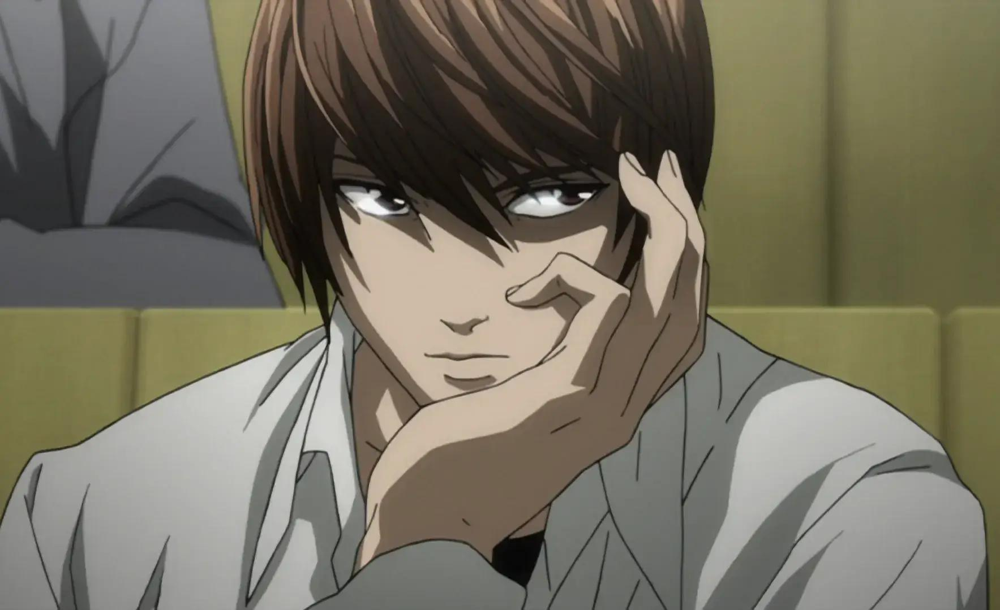
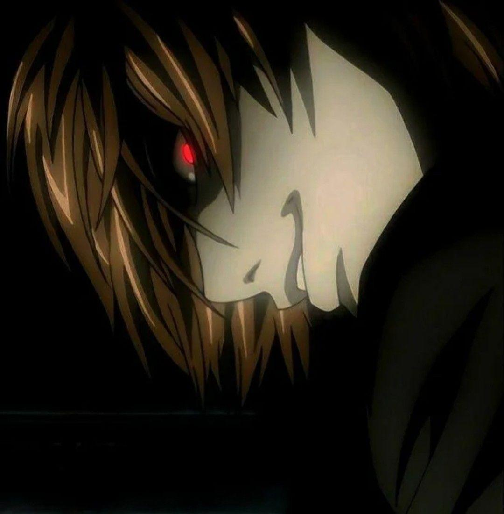

Intelligence exceptionnelle
Il possède une capacité d'analyse remarquable et sait anticiper les actions de ses adversaires pour garder une longueur d'avance.

- Avant le Death Note : Light est un étudiant brillant, discipliné et populaire, mais profondément ennuyé par le monde qu'il trouve injuste et corrompu.
- Après la découverte du Death Note : Il développe une obsession pour la justice et commence à se considérer comme le créateur d'un nouveau monde.
- En devenant Kira : Son désir de justice se transforme progressivement en soif de pouvoir et de contrôle. Il ne supporte plus que quiconque remette en question son autorité.

Il possède une capacité d'analyse remarquable et sait anticiper les actions de ses adversaires pour garder une longueur d'avance.

Il se croit intellectuellement supérieur aux autres et finit par se convaincre qu'il est le seul digne de décider du sort de l'humanité.
Il sait exploiter les émotions, la confiance et les faiblesses des autres pour parvenir à ses objectifs, tout en dissimulant ses véritables intentions.
Une fois son objectif fixé, il est prêt à prendre des risques considérables et à aller très loin pour construire le monde qu'il imagine.

À mesure qu'il s'enfonce dans son rôle de Kira, il justifie ses actes et considère les sacrifices humains comme nécessaires à sa vision de la justice.